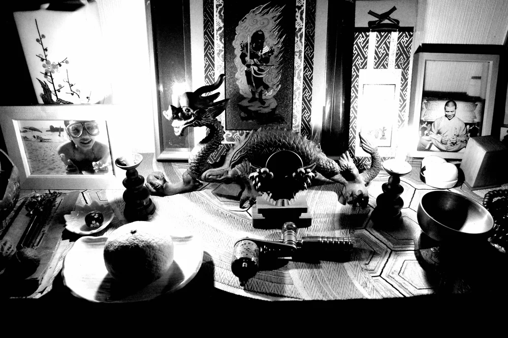

Ink as ceremony.Art as practice.Transformation as intention.
Yoso is a practitioner of presence, rooted in Japanese aesthetics, Zen philosophy and the quiet wisdom of nature. Each session is a ceremony; each design, a conversation between your story and the eternal.
More than two decades of Japanese art, Reiki and martial practice shape a gentle way of working: tuning in to your breathing, building in layers, and letting each piece settle into the skin between sittings.
Inspiration has no borders. Traditional Chinese painting, Japanese iconography and contemporary forms all feed the work, while the symbolism stays grounded in Eastern tradition.
Portfolio
Selected work
Back pieces, sleeves and body suits. Every design is made once, for its wearer, and is never repeated.
The tattoo journey
How a piece comes to life
Consultation
A conversation to outline your idea and meet each other. If the project is not the right fit, Yoso will point you to another artist.
Symbolism
Your message is distilled to its essence, choosing symbols rooted in tradition so the piece has strong foundations.
Design
Over a few weeks, drafts move from rough to refined for a set design fee, then are reviewed together before any ink.
Sessions
Larger pieces take several sittings. Healing time between them lets the work soften, deepen and settle.
Before your session
The full day is reserved for you. No numbing cream; we work with the breath instead.
- Sleep and eat well; stay sober
- Do not shave the area
- Bring two clean towels and snacks
- Wear comfortable clothes
- Bring your aftercare cream
- Tell us about allergies or conditions
- Postpone if you have a cold
- Not possible while pregnant or breastfeeding

Miyazaki studio
The studio is a temple
A private, quiet space in Miyazaki City, open by appointment only. For those travelling to Japan, a session here can be a retreat: time to rest and resource.
Confidentiality is respected. If you wish your piece to remain private, nothing is published.
Begin the conversation
Share your idea, the placement and its size. Design and sessions are charged at an hourly rate or a set daily fee; larger pieces are estimated together at consultation.
Mailing list
Occasional letters when something new is finished.